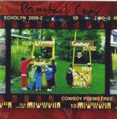

| Artist: | Echolyn |
| Title: | Cowboy Poems Free |
| Label: | Velveteen Records VR 2006-2 |
| Length(s): | 59 minutes |
| Year(s) of release: | 2000 |
| Month of review: | 09/2000 |
| 1) | Texas Dust | 5.16 |
| 2) | Poem #1 | 1.33 |
| 3) | Human Lottery | 5.32 |
| 4) | Gray Flannel Suits | 4.47 |
| 5) | Poem #2 | 0.59 |
| 6) | High As Pride | 6.45 |
| 7) | American Vacation Tune | 5.18 |
| 8) | Swingin' The Ax | 3.15 |
| 9) | 1729 Broadway | 6.01 |
| 10) | Poem #3 | 1.50 |
| 11) | 67 Degrees | 5.21 |
| 12) | Brittany | 6.34 |
| 13) | Poem #4 | 1.30 |
| 14) | Too Late For Everything | 4.33 |